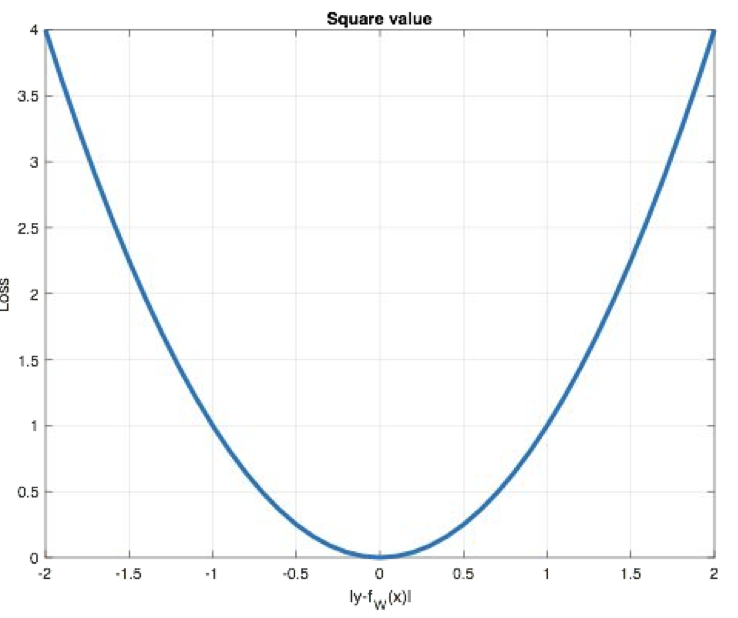
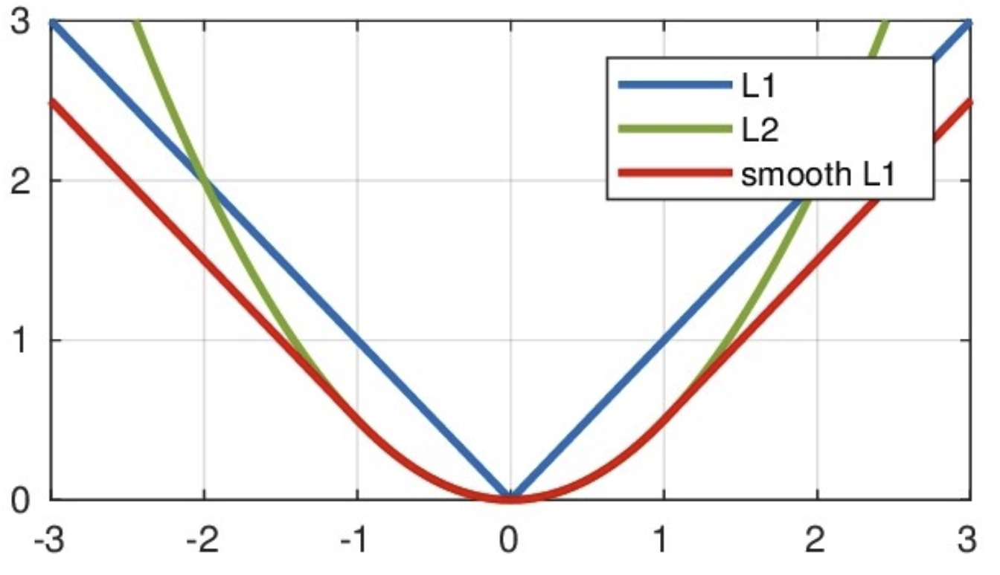

2.2 常见的损失函数¶
- 学习目标
- 知道分类任务的损失函数
- 知道回归任务的损失函数
在深度学习中, 损失函数是用来衡量模型参数的质量的函数, 衡量的方式是比较网络输出和真实输出的差异，损失函数在不同的文献中名称是不一样的，主要有以下几种命名方式：
1.分类任务¶
在深度学习的分类任务中使用最多的是交叉熵损失函数，所以在这里我们着重介绍这种损失函数。
1.1 多分类任务¶
在多分类任务通常使用softmax将logits转换为概率的形式，所以多分类的交叉熵损失也叫做softmax损失，它的计算方法是：

其中，y是样本x属于某一个类别的真实概率，而f(x)是样本属于某一类别的预测分数，S是softmax函数，L用来衡量p,q之间差异性的损失结果。
例子：
上图中的交叉熵损失为：
从概率角度理解，我们的目的是最小化正确类别所对应的预测概率的对数的负值，如下图所示：
在tf.keras中使用CategoricalCrossentropy实现，如下所示：
# 导入相应的包
import tensorflow as tf
# 设置真实值和预测值
y_true = [[0, 1, 0], [0, 0, 1]]
y_pred = [[0.05, 0.95, 0], [0.1, 0.8, 0.1]]
# 实例化交叉熵损失
cce = tf.keras.losses.CategoricalCrossentropy()
# 计算损失结果
cce(y_true, y_pred).numpy()
结果为：
1.176939
1.2 二分类任务¶
在处理二分类任务时，我们不在使用softmax激活函数，而是使用sigmoid激活函数，那损失函数也相应的进行调整，使用二分类的交叉熵损失函数：

其中，y是样本x属于某一个类别的真实概率，而y^是样本属于某一类别的预测概率，L用来衡量真实值与预测值之间差异性的损失结果。
在tf.keras中实现时使用BinaryCrossentropy()，如下所示：
# 导入相应的包
import tensorflow as tf
# 设置真实值和预测值
y_true = [[0], [1]]
y_pred = [[0.4], [0.6]]
# 实例化二分类交叉熵损失
bce = tf.keras.losses.BinaryCrossentropy()
# 计算损失结果
bce(y_true, y_pred).numpy()
结果为：
0.5108254
2.回归任务¶
回归任务中常用的损失函数有以下几种：
2.1 MAE损失¶
Mean absolute loss(MAE)也被称为L1 Loss，是以绝对误差作为距离：
曲线如下图所示：
特点是：由于L1 loss具有稀疏性，为了惩罚较大的值，因此常常将其作为正则项添加到其他loss中作为约束。L1 loss的最大问题是梯度在零点不平滑，导致会跳过极小值。
在tf.keras中使用MeanAbsoluteError实现，如下所示：
# 导入相应的包
import tensorflow as tf
# 设置真实值和预测值
y_true = [[0.], [0.]]
y_pred = [[1.], [1.]]
# 实例化MAE损失
mae = tf.keras.losses.MeanAbsoluteError()
# 计算损失结果
mae(y_true, y_pred).numpy()
结果为：
1.0
2.2 MSE损失¶
Mean Squared Loss/ Quadratic Loss(MSE loss)也被称为L2 loss，或欧氏距离，它以误差的平方和作为距离：
曲线如下图所示：

特点是：L2 loss也常常作为正则项。当预测值与目标值相差很大时, 梯度容易爆炸。
在tf.keras中通过MeanSquaredError实现：
# 导入相应的包
import tensorflow as tf
# 设置真实值和预测值
y_true = [[0.], [1.]]
y_pred = [[1.], [1.]]
# 实例化MSE损失
mse = tf.keras.losses.MeanSquaredError()
# 计算损失结果
mse(y_true, y_pred).numpy()
结果为：
0.5
2.3 smooth L1 损失¶
Smooth L1损失函数如下式所示：
其中：𝑥=f(x)−y 为真实值和预测值的差值。

从上图中可以看出，该函数实际上就是一个分段函数，在[-1,1]之间实际上就是L2损失，这样解决了L1的不光滑问题，在[-1,1]区间外，实际上就是L1损失，这样就解决了离群点梯度爆炸的问题。通常在目标检测中使用该损失函数。
在tf.keras中使用Huber计算该损失，如下所示：
# 导入相应的包
import tensorflow as tf
# 设置真实值和预测值
y_true = [[0], [1]]
y_pred = [[0.6], [0.4]]
# 实例化smooth L1损失
h = tf.keras.losses.Huber()
# 计算损失结果
h(y_true, y_pred).numpy()
结果：
0.18
总结
- 知道分类任务的损失函数
多分类的交叉熵损失函数和二分类的交叉熵损失函数
- 知道回归任务的损失函数
MAE，MSE，smooth L1损失函数